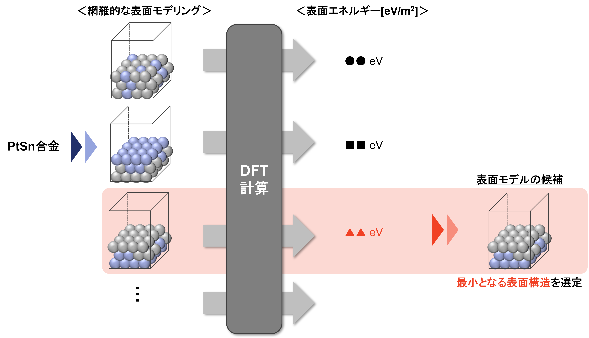
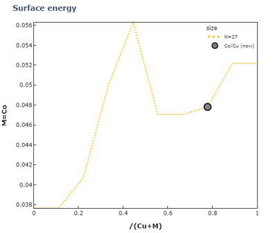

2. 表面モデリングの分類
表面モデリングの方法として、「既に表面構造が分かっている場合」と「表面構造が分かっていない場合」の2つに大別することができます。
2.1. 既に表面構造が分かっている場合
注釈
- TEM (透過電子顕微鏡)
試料に電子を照射し、透過した電子や散乱した電子を検出することで原子配列や組成などを得ることができます。
- STM (走査型トンネル顕微鏡)
試料に金属探針を近づけて、その際に生じるトンネル電流を検出することで表面構造を得ることができます。
- XAFS (X線吸収微細構造解析)
試料にX線を照射し、蛍光X線を検出することで材料表面における結合状態を得ることができます。
- XPS (X線光電子分光法)
試料にX線を照射し、それにより放出される電子の数やエネルギーを検出することで材料表面における結合状態を得ることができます。
上記に示すように表面構造が分かっている場合、結晶構造データを取得して表面を切り出すことで表面モデリングを行います。

結晶構造データの取得方法の一例を以下に示します。
- Materials Project
MIT(Massachusetts Institute of Technology)で開発された、物質材料の第一原理計算結果のデータベース
- AtomWork
NIMS(物質・材料研究機構)とMPDS(Material Phases Data System)により開発された、科学技術文献から抽出したデータを収録した無機材料データベース
- PubChem
NCBI(National Center for Biotechnology Information)により公開されている化学物質データベース
- ICSD (Inorganic Cristal Structure Database)
FIZ Karlsruheで開発された無機結晶構造データベース
- ASE (Atomic Simulation Environment)
組成や結晶構造、格子定数を入力することで結晶構造データを構築可能なpythonパッケージ
- ASE
原子シミュレーションを行うためのpythonモジュール
- pymatgen
材料分析用のオープンソースpythonライブラリ
- Materials Studio
材料のモデリングとシミュレーションを行うことができる有償ソフトウェア
- Advance/NanoLabo
オープンソースの材料解析ソフトウェアに対応したGUIプログラムパッケージ
以上より、既に表面構造が分かっている場合では、結晶構造データを取得して表面を切り出すことで表面モデリングをすることができます。
2.2. 表面構造が分かっていない場合
前述したように種々の分析により表面構造を知ることができますが、触媒材料や電池材料においては反応点である金属や合金をナノサイズにして分散させるため、上記の分析で表面構造を原子レベルで知ることは難しいとされています。
この場合、考えられる全ての表面構造をモデリングしてDFT計算(密度汎関数理論計算)で表面エネルギー \(Esurf\) を算出し、最小となる表面構造を選定することで表面モデリングを行うことが一般的とされています。
そのため、表面構造が分かっていない場合は考えうる全ての表面モデルを「既に表面構造が分かっている場合」での表面モデリング方法により作成し、表面エネルギーが最小となる表面構造を選定することで表面モデリングを行います。
しかし、考えられる表面構造に複数の組み合わせが存在する場合はDFT計算で最安定な表面構造を探索するのに時間を要するため、以下に示すような統計的な処理により少ないDFT計算回数で表面エネルギーが最小となる表面構造を探索することが行われています。
- モンテカルロシミュレーション
様々な確率分布で生成したランダム値を用いた最適化アルゴリズムです。
ランダムでのシミュレーションを複数回行うことで、最適な解を見つけることができます。
- 遺伝的アルゴリズム
生物の進化の仕組みを模した最適化アルゴリズムです。
より強い個体が生き残る現象や突然変異が起こる現象をアルゴリズム化することで、最適な解を探索することができます。
- 量子アニーリング
焼きなましによる金属の均一化の仕組みを模した最適化アルゴリズムです。
焼きなましにおける温度制御を量子により再現して量子の性質を用いることで、最適な解を網羅的に探索することができます。
モンテカルロシミュレーションや遺伝的アルゴリズムを用いた表面モデリングはこれまでに多く行われている一方、最適解を得ることができなかったり探索に時間を要することが課題として挙げられます。 その中で、量子アニーリングは少ない時間とコストで最適解をより正確に得ることができるアルゴリズムとされているため、組み合わせの多い表面モデリングに対して有用な手法であると考えられます。
そのため、次のページにて量子アニーリングの原理を紹介します。